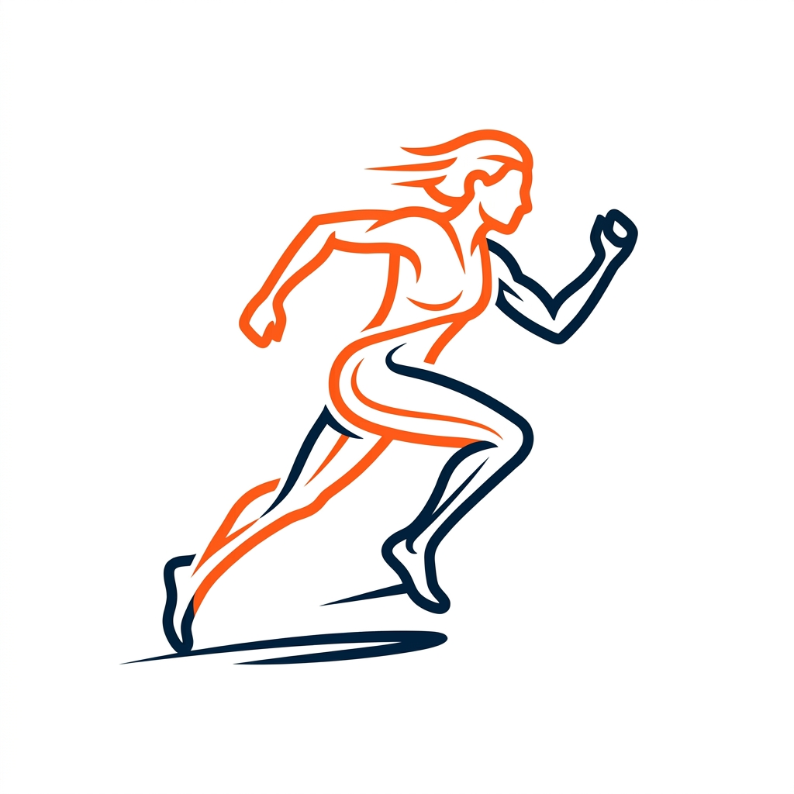
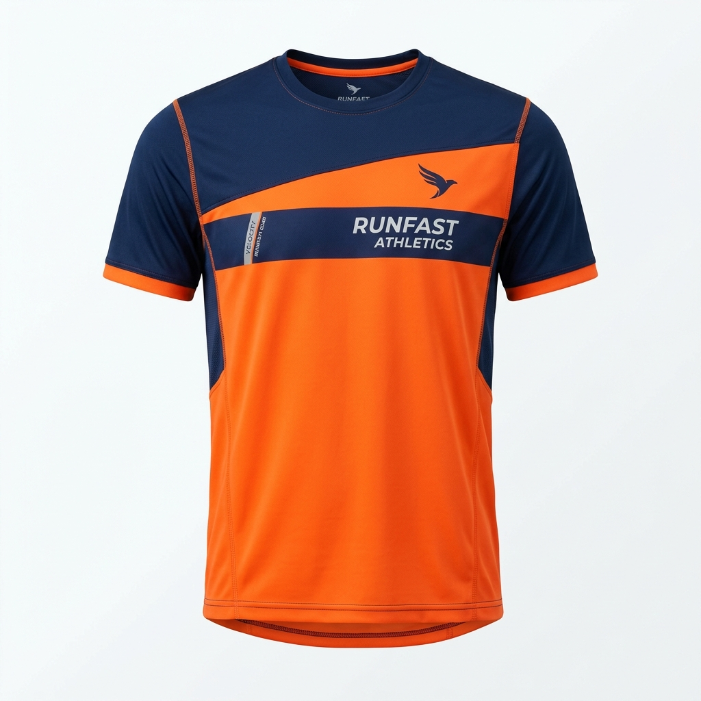
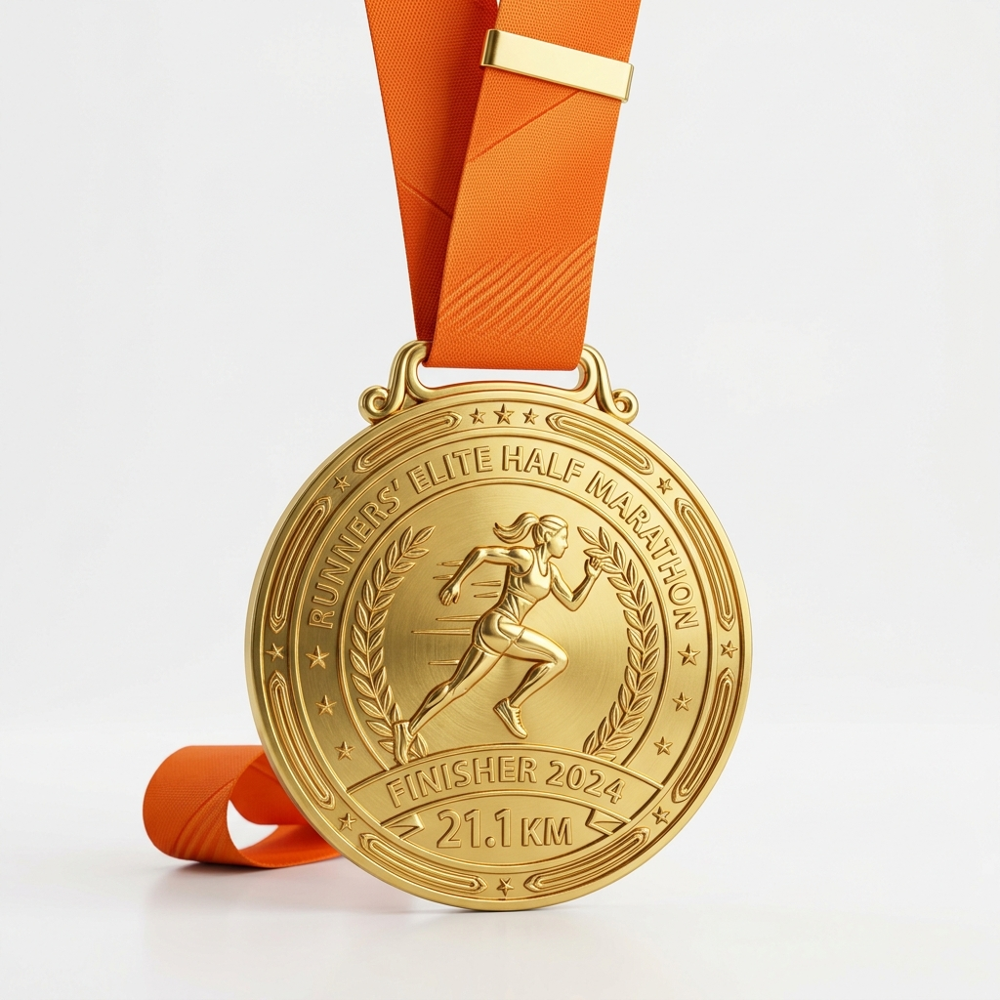

NUEVA ESPERANZADía del Evento
Punto de Partida
Distancias
Cada paso que das en "Kilómetros de Esperanza" se transforma en apoyo directo para el tratamiento y bienestar de niños luchando contra el cáncer. Únete a nosotros y haz que tu esfuerzo cruce la meta más importante: salvar vidas.
Toda la información que necesitas para prepararte para el gran día.
* Requisito: Presentar DNI y comprobante de inscripción.
Las rutas están diseñadas para disfrutar de la ciudad con seguridad total, puntos de hidratación cada 2.5km y asistencia médica en ruta.
Asegura tu lugar y obtén el kit oficial del corredor.

Tecnología dry-fit

Al cruzar la meta
Solo para 10K
En ruta y meta
¿Tienes dudas sobre la inscripción o quieres ser patrocinador del evento? Contáctanos y te responderemos a la brevedad.
+51 987 654 321
info@kilometrosdeesperanza.org